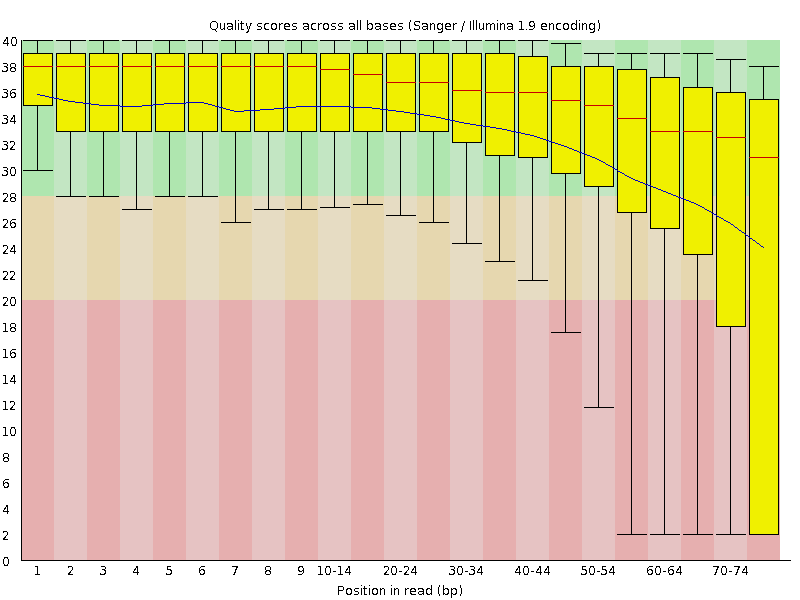
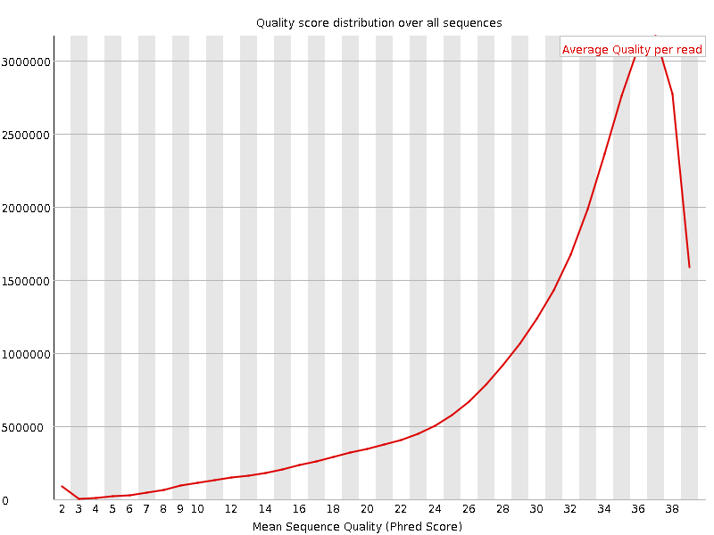
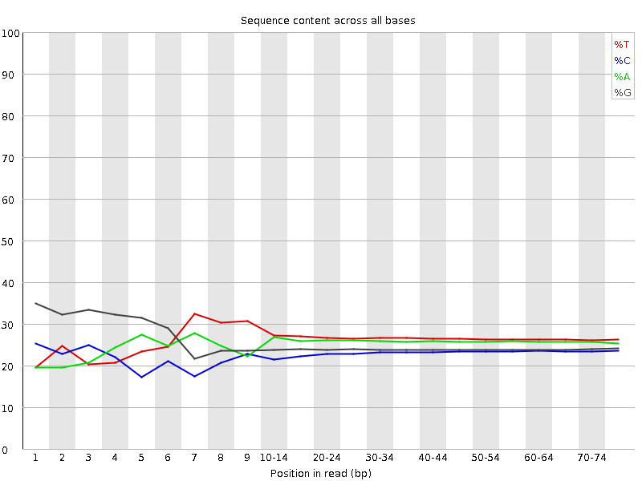
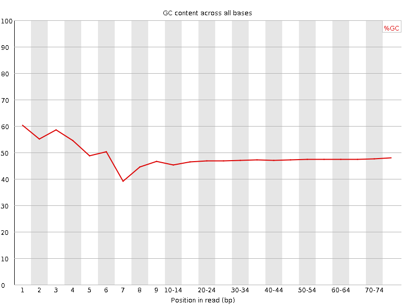
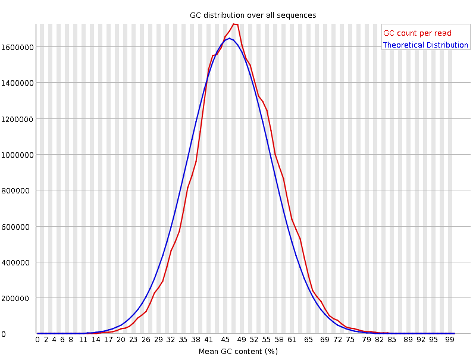
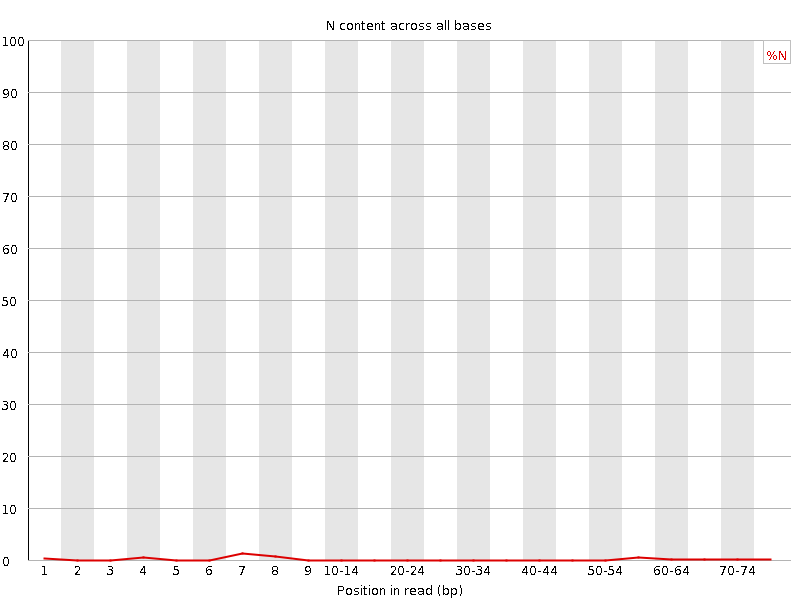
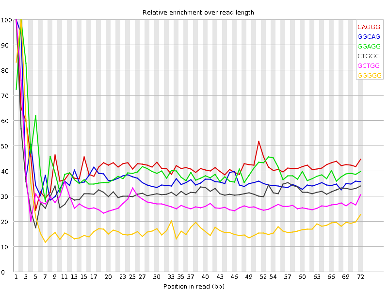

![[OK]](Icons/tick.png) Basic Statistics
Basic Statistics
| Measure | Value |
|---|---|
| Filename | SRR307907_1.fastq |
| File type | Conventional base calls |
| Encoding | Sanger / Illumina 1.9 |
| Total Sequences | 30800421 |
| Filtered Sequences | 0 |
| Sequence length | 76 |
| %GC | 47 |
![[FAIL]](Icons/error.png) Per base sequence quality
Per base sequence quality

Per sequence quality scores

![[WARN]](Icons/warning.png) Per base sequence content
Per base sequence content

Per base GC content

Per sequence GC content

Per base N content

Sequence Length Distribution

Sequence Duplication Levels

Overrepresented sequences
| Sequence | Count | Percentage | Possible Source |
|---|---|---|---|
| GCTGGATAGTAGGTAGGGACAGTGGGAATCTCGTTCATCCATTCATGCGC | 48877 | 0.15868938934308724 | No Hit |
| CGCTGGATAGTAGGTAGGGACAGTGGGAATCTCGTTCATCCATTCATGCG | 33675 | 0.10933292113117545 | No Hit |
Kmer Content

| Sequence | Count | Obs/Exp Overall | Obs/Exp Max | Max Obs/Exp Position |
|---|---|---|---|---|
| CAGGG | 4251535 | 2.1709857 | 5.1335645 | 1 |
| GGCAG | 4125020 | 2.1063826 | 5.637029 | 1 |
| GGAGG | 4370825 | 2.0888143 | 5.135832 | 2 |
| CTGGG | 4185225 | 2.0765827 | 6.423583 | 1 |
| GCTGG | 4005385 | 1.9873515 | 6.991474 | 1 |
| GGGGG | 3867105 | 1.9344965 | 10.057429 | 2 |
| GGGCA | 3485385 | 1.7797621 | 5.1910667 | 1 |
| GGGAG | 3705735 | 1.7709681 | 5.4210405 | 2 |
| GGGGA | 3681300 | 1.7592907 | 7.33257 | 1 |
| TGGGG | 3667135 | 1.702874 | 6.599078 | 1 |
| GTGGG | 3418500 | 1.5874176 | 6.9348493 | 1 |
| GGGGT | 3276520 | 1.5214876 | 8.31878 | 3 |
| GGGCT | 3037380 | 1.5070566 | 5.0842686 | 3 |
| GGGGC | 2761720 | 1.4761702 | 5.4527893 | 2 |
| GGGTG | 3165755 | 1.4700528 | 5.14456 | 2 |
| CGGGG | 2119295 | 1.132787 | 9.418155 | 1 |
| GCGGG | 1361085 | 0.7275152 | 5.209858 | 1 |